Smart casting
Wróćmy do przykładu “Przywitania” pytającego o wiek:
println("Ile masz lat?")
val wiek = readln().toIntOrNull()
val wiekKotlina = 12
if (wiek == wiekKotlina) {
println("O, ja też!")
} else if (wiek != null && wiek < wiekKotlina) {
println("Ha, ja jestem starszy, mam już $wiekKotlina lat!")
} else if (wiek != null && wiek > wiekKotlina) {
println("Też bym chciał tyle mieć, mam dopiero $wiekKotlina lat.")
}
Dodajmy na początku łańcuszka if..else‘ów jeszcze jednego ifa ze sprawdzeniem, czy wiek == null:
println("Ile masz lat?")
val wiek = readln().toIntOrNull()
val wiekKotlina = 12
if (wiek == null) {
println("Nie bardzo rozumiem 😕. Jakby coś, to ja mam już $wiekKotlina lat.")
} else if (wiek == wiekKotlina) {
println("O, ja też!")
} else if (wiek != null && wiek < wiekKotlina) {
println("Ha, ja jestem starszy, mam już $wiekKotlina lat!")
} else if (wiek != null && wiek > wiekKotlina) {
println("Też bym chciał tyle mieć, mam dopiero $wiekKotlina lat.")
}
IntelliJ zasugeruje usunięcie wiek != null z kolejnych if‘ów:
println("Ile masz lat?")
val wiek = readln().toIntOrNull()
val wiekKotlina = 12
if (wiek == null) {
println("Nie bardzo rozumiem 😕. Jakby coś, to ja mam już $wiekKotlina lat.")
} else if (wiek == wiekKotlina) {
println("O, ja też!")
} else if (wiek < wiekKotlina) {
println("Ha, ja jestem starszy, mam już $wiekKotlina lat!")
} else if (wiek > wiekKotlina) {
println("Też bym chciał tyle mieć, mam dopiero $wiekKotlina lat.")
}
Jest to przykład tzw. smart castingu, czyli automatycznego wnioskowania dotyczącego typu obiektów. Warunki w łańcuszku if..else‘ów sprawdzane są po kolei, z góry na dół, i zawsze wykonywana jest maksymalnie jedna “gałąź” kodu. Jeśli wiek jest nullem, program wejdzie w pierwszy blok kodu w naszym łańcuszku i dalsze warunki nie są sprawdzane. Analogicznie, jeśli sprawdzane są kolejne warunki, to znaczy, że pierwszy warunek – wiek == null – nie jest spełniony, więc wiek nie jest nullem i nie ma po co sprawdzać tego ponownie.
when
Kotlin ma jeszcze jeden rodzaj “instrukcji warunkowych” – bloczek when. IntelliJ ma wbudowany mechanizm do zamiany jednej notacji na drugą. Jeśli użyjecie na pierwszym ifie w łańcuszku quick fixa Replace 'if' with 'when' (skrót Alt + Enter), nasz kod zmieni się coś takiego:
when {
wiek == null -> {
println("Nie bardzo rozumiem 😕. Jakby coś, to ja mam już $wiekKotlina lat.")
}
wiek == wiekKotlina -> {
println("O, ja też!")
}
wiek < wiekKotlina -> {
println("Ha, ja jestem starszy, mam już $wiekKotlina lat!")
}
wiek > wiekKotlina -> {
println("Też bym chciał tyle mieć, mam dopiero $wiekKotlina lat.")
}
}
Proponuję użyć kolejnego quick fixa, Remove braces from all 'when' entries, żeby pozbyć się zbędnych klamerek (są one konieczne, gdy chcemy w jakimś przypadku w wyrażeniu when wykonać więcej operacji; przy wywołaniu pojedynczej funkcji są one opcjonalne i ja bym je usunął, żeby nie zaciemniać niepotrzebnie kodu):
when {
wiek == null -> println("Nie bardzo rozumiem 😕. Jakby coś, to ja mam już $wiekKotlina lat.")
wiek == wiekKotlina -> println("O, ja też!")
wiek < wiekKotlina -> println("Ha, ja jestem starszy, mam już $wiekKotlina lat!")
wiek > wiekKotlina -> println("Też bym chciał tyle mieć, mam dopiero $wiekKotlina lat.")
}
when z argumentem
Zastosujmy podobne Quick Fixy do łańcuszka ifów sprawdzającego imię:
val imię = readln()
if (imię == "Kotlin") {
println("Nie może być! Ja też nazywam się Kotlin!")
} else if (imię == "Python" || imię == "Scratch") {
println("Też jesteś językiem programowania? Bardzo mi miło!")
} else {
if (imię.length >= 9) {
println("Ooo, jakie długie imię! Ma aż ${imię.length} liter!")
}
println("Miło mi cię poznać $imię, ja nazywam się Kotlin.")
}
Ponieważ wszystkie warunki w naszym łańcuszku ifów porównywały stałą imię z jakimiś wartościami, IntelliJ zastosował troszkę inną składnię:
val imię = readln()
when (imię) {
"Kotlin" ->
println("Nie może być! Ja też nazywam się Kotlin!")
"Python", "Scratch" ->
println("Też jesteś językiem programowania? Bardzo mi miło!")
else -> {
if (imię.length >= 9) {
println("Ooo, jakie długie imię! Ma aż ${imię.length} liter!")
}
println("Miło mi cię poznać $imię, ja nazywam się Kotlin.")
}
}
Stała imię została przekazana do wyrażenia when jako argument. Dzięki temu nie musimy pisać wszędzie imię == "Cośtam" i nie musimy używać operatora || w drugiej gałęzi kodu – wystarczy podać wszystkie możliwości oddzielone przecinkami.
IntelliJ sugeruje jeszcze jedną zmianę. Jako że stała imię używana jest tylko wewnątrz wyrażenia when, możemy zadeklarować ją bezpośrednio w tym wyrażeniu:
when (val imię = readln()) {
"Kotlin" ->
println("Nie może być! Ja też nazywam się Kotlin!")
"Python", "Scratch" ->
println("Też jesteś językiem programowania? Bardzo mi miło!")
else -> {
if (imię.length >= 9) {
println("Ooo, jakie długie imię! Ma aż ${imię.length} liter!")
}
println("Miło mi cię poznać $imię, ja nazywam się Kotlin.")
}
}
Zmienne
Na samym początku naszych zajęć poznaliście koncepcję stałych. Porównywaliśmy je do metek, które przyczepione są do różnych rzeczy. Dzięki stałym można nadać obiektowi nazwę, żeby w dalszej części programu móc go użyć wiele razy. Jak sama nazwa wskazuje, stałe są ustalane raz na zawsze, i nie da się ich już zmienić: nie można przekleić tej samej “metki” na inny obiekt.
Można natomiast stworzyć coś w rodzaju pudełka z etykietą. Można do niego wkładać różne rzeczy albo spojrzeć co jest w środku. Takie pudełko to zmienna i w Kotlinie tworzymy ją słowem kluczowym var. Tak jak stałe, nasze zmienne mają nazwę, oraz typ (którego nie musimy podawać): w analogii pudełka, typ jest oczywiście kształtem “klocków”, które można w tym pudełku przechowywać.
val stała = 1500
stała = 2900 // błąd kompilacji, nie można zmienić wartości stałej
var zmienna = 1500
zmienna = 2900 // wszystko w porządku, zmieniamy zawartość pudełka z etykietą "zmienna"
zmienna = "kopytko" // błąd kompilacji, nie da się wsadzić Stringa do zmiennej typu Int
Drobna dygresja: wszystkie te porównania do pudełek, metek i innych fizycznych przedmiotów w pewnym momencie stają się naciągane (i to dość mocno). Na przykład, jeden obiekt bez problemu można jednocześnie wsadzić do kilku pudełek:
val tekst = readln()
var superTekst = tekst
var hiperTekst = tekst
Nie wspominając już o tym, że “pudełka”-zmiennej nie da się po prostu opróżnić, zawsze musi ono zawierać jakiś obiekt. Albo o tym, że obiekt może mieć zmienną własność (czyli “przyczepioną do siebie” zmienną), do której można przypisać ten sam obiekt (czyli mielibyśmy pudełko, które w środku ma samo siebie 🤯).
Może lepszym porównaniem byłyby metki przyczepiane na rzepy 🤔? Tylko jak wtedy wyjaśnić, że zmienna nie może zmieniać typu? Czy trzeba wyobrazić sobie magiczne rzepy, które przyczepiają się tylko do kwadratowych klocków?
Nie chcę wam namieszać w głowach, tylko przestrzec przed zbytnim przywiązywaniem się do tego typu porównań. Postarajcie się zrozumieć ideę, a potem wyrzucić z głowy zbędną analogię.
Program “Zabawa w chowanego”
Napiszmy program, który będzie “liczył” od 1 do 20, a następnie wypisze tekst “Szuuuukaaaam!” – jak przy zabawie w chowanego.
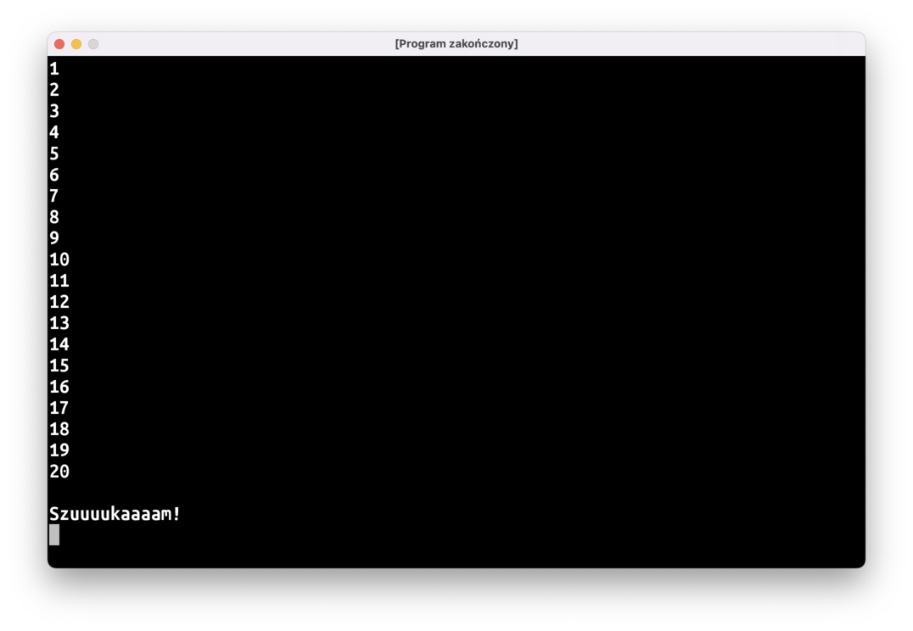
Nie będziemy jednak pisać jak zwierzęta 20 instrukcji println, wykorzystajmy zmienną oraz pętlę do..while:
fun main() = terminal {
var odliczanie = 0
do {
// tu brakuje kodu
} while (…) // tu też
println()
println("Szuuuukaaaam!")
}
Przedziały liczb
Typ Int reprezentuje w Kotlinie jedną liczbę całkowitą. Typ IntRange to przedział liczb całkowitych, czyli np.: “wszystkie liczby od 1 do 20”. Tworzymy go za pomocą operatora ..:
val odliczanie = 1..20
Przedziałów liczb można użyć w specjalnej pętli for:
for (liczba in 1..20) {
// blok kodu
}
liczba jest taką tymczasową stałą, którą widać tylko w bloku kodu pomiędzy nawiasami klamrowymi. Ten blok wykona się po kolei dla każdej liczby w podanym przedziale i za każdym razem stała liczba będzie miała inną wartość.
Jak widzicie, jest to idealne rozwiązanie do programu “Zabawa w chowanego”: użycie przedziału i pętli for pozwoli znacznie uprościć kod.
Możemy też użyć pętli for z przedziałem liczb po to, żeby wykonać jakiś kod kilka razy:
// Ten program wypisze "Hello" 10 razy.
for (i in 1..10) { // co prawda musimy "stworzyć" tymczasową stałą i…
println("Hello") // …ale wcale nie musimy jej używać!
}
Użycie pętli for z typem String
Tak naprawdę pętli for możemy użyć z dowolnym obiektem, który przedstawia jakiś ciąg elementów. IntRange to oczywiście ciąg wszystkich liczb Int zawartych w przedziale. A tekst? Możecie myśleć o tekstach String jako o sekwencji znaków:
// bardzo skomplikowany sposób na wypisanie "Hello"
for (znak in "Hello") {
print(znak)
}
println()
// wypisanie "Hello" literka po literce, każda litera w osobnej linii
for (znak in "Hello") {
println(znak)
}
Pojedynczy znak w Kotlinie to typ Char (od angielskiego słowa character), i można utworzyć go przy użyciu apostrofów:
val jednaLiterka: Char = 'a'
val jednoliterkowyTekst: String = "a"
Losowanie liczby
Inną rzeczą, którą możemy zrobić z przedziałem liczb to wybranie losowej liczby przy użyciu funkcji fun IntRange.random(): Int:
val kostkaDoGry = 1..6
println("Super, wyrzuciłem ${kostkaDoGry.random()} oczek!")
Losowanie Boolean (rzut monetą)
Jeśli będziemy potrzebowali “rzutu monetą”, czyli losowego wybrania czy coś ma się wydarzyć, czy nie, możemy oczywiście użyć przedziału liczb:
fun main() = terminal {
if (rzutMonetą()) {
println("Pójdę w lewo!")
} else {
println("Pójdę w prawo!")
}
}
fun rzutMonetą(): Boolean {
return (0..1).random() == 1
}
Jednak sensowniejszą opcją będzie użycie bibliotecznej funkcji Random.nextBoolean():
fun main() = terminal {
if (Random.nextBoolean()) {
println("Pójdę w lewo!")
} else {
println("Pójdę w prawo!")
}
}
Możecie też być trochę zaskoczeni tym zapisem, zazwyczaj funkcje albo wykonywaliśmy “po prostu”, jak println(), albo one doklejone do konkretnego obiektu, jak np.: "tekst".uppercase(), natomiast Random wygląda na typ, tak jak Int czy String. Zapis Random.nextBoolean(…) oznacza, że funkcja nie jest “przyczepiona” do konkretnego obiektu tego typu, ale do samego typu. Czyli tak jakby to była funkcja powiązana z jakimś konkretnym “kształtem” (w Kotlinie można też o tym myśleć jako o funkcji przyczepionej do specjalnego obiektu “doczepionego” do kształtu).
Pakiety i importy
Spróbujcie wpisać powyższy kod, przy czym celowo pisząc Random.nextBoolean() nie korzystajcie z sugestii IntelliJ, tylko napiszcie wszystko sami. Random.nextBoolean() zostanie podkreślone na czerwono i IntelliJ będzie sugerowało naciśnięcie Alt + Enter
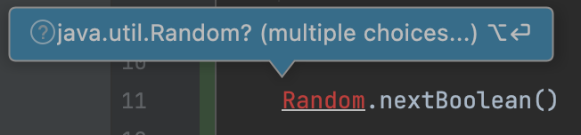
Kotlin w ten sposób sygnalizuje, że nie wie, co to jest Random: poszukał czegoś takiego w naszym katalogu z kodem, ale nie udało mu się znaleźć. Musimy pomóc mu i naprowadzić go na kawałek kodu, którego chcemy użyć. Po naciśnięciu Alt + Enter (czyli tak naprawdę użyciu quick fixa Import) dostaniemy do wyboru dwie opcje: IntelliJ znalazł dwa typy Random, o które mogło nam chodzić. Ten, którego chcemy użyć, to kotlin.random.Random. Po wybraniu tej opcji przed naszą funkcją main pojawi się linijka:
import kotlin.random.Random
W ten sposób mówimy kompilatorowi: “jeśli w tym pliku znajdziesz kod, który robi coś z typem Random, chodzi tutaj o typ kotlin.random.Random, ok?”.
Pierwszy człon tej nazwy, kotlin.random, to inaczej nazwa pakietu, w którym znajduje się typ Random. Nasze dotychczasowe programy też znajdują się w pewnym pakiecie, a konkretnie w pakiecie jerz.codes.wprawki. Jest to określone w pierwszej linijce w pliku: package jerz.codes.wprawki.
Możecie spytać: czemu nie musieliśmy robić importów dla funkcji println(), albo typu String? Przecież ten kod też nie znajduje się w naszym katalogu. Odpowiedź jest prosta: ponieważ są to podstawowe elementy języka i tzw. biblioteki standardowej, nie trzeba ich importować.
Podobnie, nie musieliśmy importować funkcji megafon, kreska, rzutMonetą, czy innych pomocniczych funkcji, które pisaliśmy do tej pory, ponieważ są one w tym samym katalogu (a ściślej rzecz ujmując, w tym samym pakiecie), co kod, który ich używa.
W każdym programie, jaki pisaliśmy do tej pory, znajduje się jeszcze jeden import:
import jerz.codes.terminal.terminal
W ten sposób “importujemy” do naszego pliku funkcję terminal z pakietu jerz.codes.terminal: to jest narzędzie użyte na sammy początku waszych funkcji main, dzięki któremu wasze programy uruchamiają się w osobnym okienku, a nie w panelu Run wewnątrz IntelliJ’a. Nasz kod znajduje się w pakiecie jerz.codes.wprawki, funkcja terminal jest w pakiecie jerz.codes.terminal, więc import jest konieczny.
O pakietach warto powiedzieć jeszcze dwie rzeczy.
Po pierwsze, przyjęło się, że nazwa pakietu pokrywa się ze strukturą katalogów, tj. kod w pakiecie jerz.codes.wprawki powinien znajdować się w podkatalogu jerz/codes/wprawki. Starajcie się przestrzegać tej reguły, ułatwia to szukanie kodu w większych projektach. Zresztą, IntelliJ będzie wam w tym dość intensywnie pomagał, marudząc i bazgrząc kod na żółto, w momencie gdy package i lokalizacja pliku się rozjadą.
Po drugie nazwa pakietu “dolepiona” jest do każdego typu i każdej funkcji, którą piszecie. Czyli tak naprawdę funkcja megafon, którą pisaliśmy na pierwszych zajęciach, nazywa się jerz.codes.wprawki.megafon. W całym waszym projekcie nie może być dwóch funkcji o tej samej pełnej nazwie i tych samych parametrach. Możecie mieć dwie funkcje o tej samej nazwie, ale różniące się parametrami:
package jerz.codes.wprawki
fun rysujKreske() {
println("--------------------")
}
fun rysujKreske(dlugosc: Int) {
println("-".repeat(dlugosc))
}
Albo dwie funkcje o tej samej “krótkiej” nazwie, ale znajdujące się w dwóch plikach w różnych pakietach:
// w pliku /jerz/codes/wprawki/Dorsz.kt
package jerz.codes.wprawki
fun rysujKreske() {
println("--------------------")
}
// w pliku /jerz/codes/wprawki/naryby/Karp.kt
package jerz.codes.wprawki.naryby
fun rysujKreske() {
println("--------------------")
}
Natomiast dwie funkcje o takich samych parametrach, takiej samej nazwie, znajdujące w tym samym pakiecie, spowodują błąd budowania projektu. Wyjątkiem są funkcje main(), ale nie będziemy się tutaj zagłębiać w szczegóły.
W przypadku naszych “wprawek”, czyli testowych programów raczej nie będziemy mieli konfliktów nazw pomiędzy funkcjami, więc wszystko możemy trzymać w jednym pakiecie. Może natomiast być to problematyczne przy pisaniu większych programów, dlatego też każdą grę będziemy umieszczać w osobnym pakiecie. Najprościej można to osiągnąć zmieniając package podany w pierwszej linijce w pliku, a następnie używając quick fixa Move file to ….
Zgadula
Czas, abyśmy napisali naszą pierwszą grę!
Zadaniem gracza, będzie odgadnięcie liczby, którą wylosował komputer. Przy każdej próbie komputer udziela wskazówki: czy podana liczba jest większa, czy mniejsza od wylosowanej. Gra kończy się, gdy gracz udzieli poprawnej odpowiedzi.
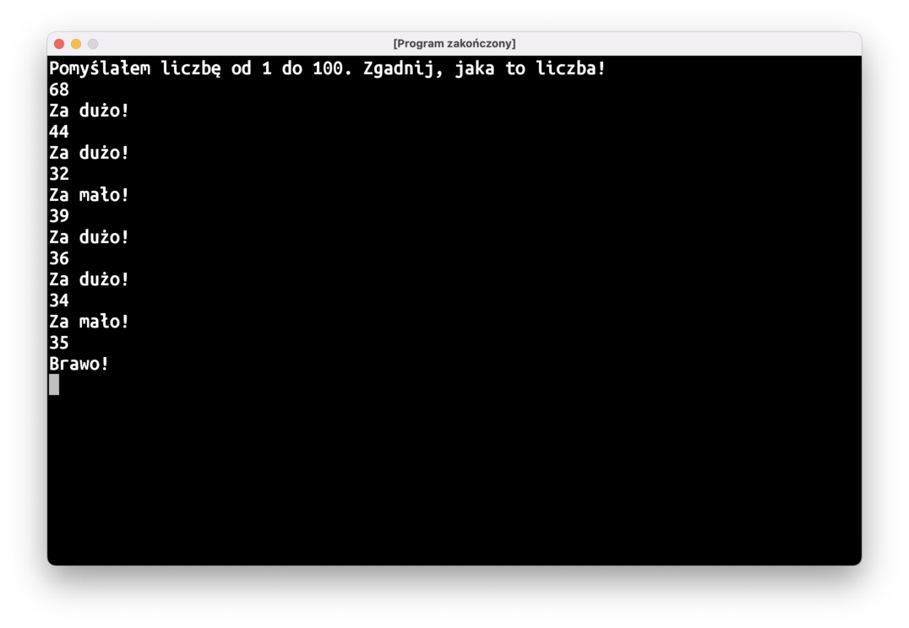
Pamiętajcie o obsłudze dziwnego tekstu wprowadzonego z klawiatury przez użytkowników!
Jeśli nie wiecie jak się zabrać za to zadanie, zajrzyjcie na kanał #pomocyyy na Slacku, zamieściłem tam pseudokod do podstawowej wersji Zgaduli. W razie dalszych problemów śmiało pytajcie!
Powodzenia!
Podsumowanie
- Czasami kod staje się bardziej czytelny, gdy łańcuszek
ifów zastąpimy wyrażeniemwhen. - Zmienne to “pudełka”, do których można wkładać obiekty. Zawartość pudełka można zmienić, można też “spojrzeć” jaki obiekt znajduje się obecnie w pudełku.
- Przedział liczb reprezentowany jest przez typ
IntRange. Można go utworzyć operatorem... Zarówno lewa, jak i prawa liczba zawiera się tworzonym przedziale, tj. przedział1..6oznacza liczby 1, 2, 3, 4, 5, i 6. - Pętla, która działa z różnego rodzaju zbiorami danych (przedziałami liczb, tekstami, itp.) to pętla
for (cośtam in lista) { … }.cośtamto stała, która będzie widoczna w bloku kodu pomiędzy nawiasami klamrowymi, i w każdym przebiegu pętli będzie wskazywać na kolejną wartość z listy. - Pojedyncza (lub “pojedyczna”, jak wolicie) litera w Kotlinie to typ
Char. Można stworzyć ją przy użyciu apostrofów:val literaJ: Char = 'J'. - Do losowania liczb służy funkcja
IntRange.random(). - Do losowania obiektu
Boolean(truealbofalse) służy funkcjaRandom.nextBoolean(). - Funkcje mogą być “dolepione” do typu, a nie do konkretnego obiektu tego typu, np.:
Random.nextBoolean(). Takie funkcje można wywołać, nie tworząc żadnego obiektu tego typu. - Typy i funkcje spoza naszego pakietu, takie jak
Random, trzeba zaimportować, żeby kompilator wiedział, o który typ nam chodzi.
Programy do napisania w domu
Zadania oznaczone ⭐ mają nieco większy poziom trudności. Jeśli sprawiają wam one kłopot albo nie wiecie jak się do nich zabrać, na razie je odpuśćcie. Zawsze możecie do nich wrócić po dalszych zajęciach, gdy nabierzecie większej wprawy.
1. Szczęśliwego Nowego Roku!
Napiszcie program, który wypisze noworoczne odliczanie do północy:
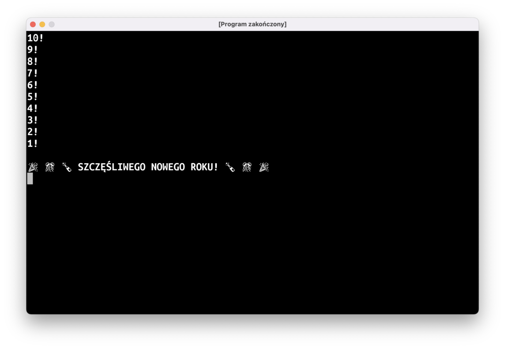
Możecie użyć funkcji IntRange.reversed(), która zwraca obiekt IntProgression, który zawiera te same elementy co IntRange, na podstawie którego został stworzony, ale kolejność przechodzenia przez elementy w pętli for jest odwrócona.
2. Kostka do gry
Czeka na naciśnięcie enter i wypisuje wynik rzutu sześciościenną kostką do gry:
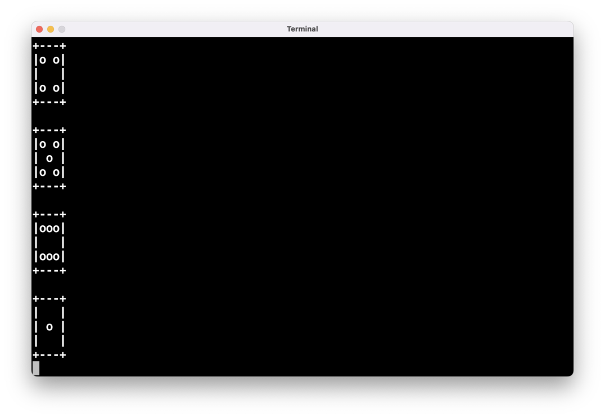
3. Megafon v2
Napiszcie funkcję fun megafon(tekst: String, poziomBaterii: Int). W zależności od wartości tego argumentu funkcja powinna zmienić swoje zachowanie:
0: wypisuje tylko"📣: ..."<= 5: wypisuje tylko"📣: [trzask]"<= 20: wypisuje losowo duże i małe litery i może pominąć niektóre wykrzykniki"📣: UwAGa, uWAGa!"- W przeciwnym razie wypisuje tekst wielkimi literami i stawia na końcu trzy wykrzykniki
"📣: UWAGA, UWAGA!!!"
Przykładowo, wynik uruchomienia tego programu:
fun main() = terminal {
megafon("uwaga, uwaga", 20)
megafon("rozpoczynamy odliczanie", 20)
megafon("hmm, zaraz, coś tu chyba szwankuje", 20)
megafon("no tak, bateria...", 5)
megafon("jak się to wymieniało?", 0)
megafon("test, test, próba", 100)
megafon("dobra, jedziemy", 100)
megafon("rozpoczynamy odliczanie", 100)
megafon("3", 100)
megafon("2", 100)
megafon("1", 100)
megafon("start", 100)
}
Może wyglądać następująco:
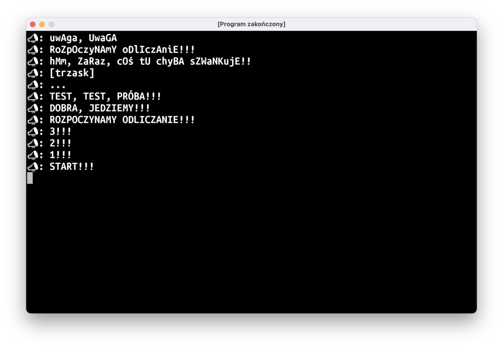
4. Przeliterowywacz
Napiszcie program, który wczyta tekst z klawiatury, a następnie “przeliteruje” je, wypisując każdą literę w osobnej linii i dodając “jak Imię-Które-Zaczyna-Się-Na-Tę-Literę”:
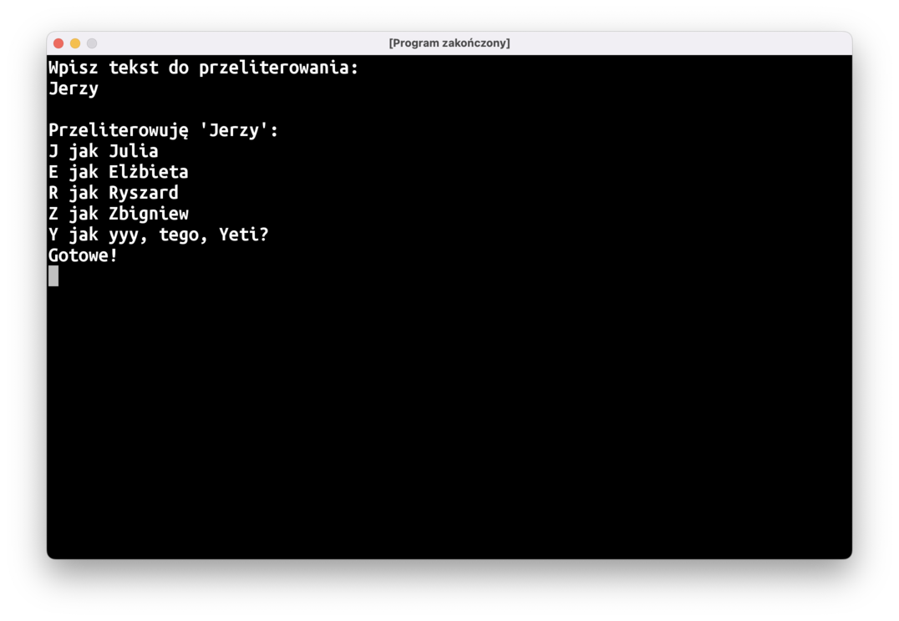
Uwaga nr 1: polecam użycie instrukcji when zamiast ogromniastego łańcuszka if..else‘ów, kod będzie dużo bardziej czytelny
Uwaga nr 2: pamiętajcie, że ktoś może wpisać tekst ze znakiem, dla którego nie da się wypisać imienia (bo jest to np.: znak interpunkcyjny, albo 'ę'). W takich wypadkach wypiszcie sam znak, z pominięciem "jak Imię-Na-Literę".
Ulepszenia “Zgaduli”
5. Gramy jeszcze raz?
Po zakończonej grze komputer proponuje kolejną rundę. Jeśli gracz wpisze “tak”, gra zaczyna się od nowa.
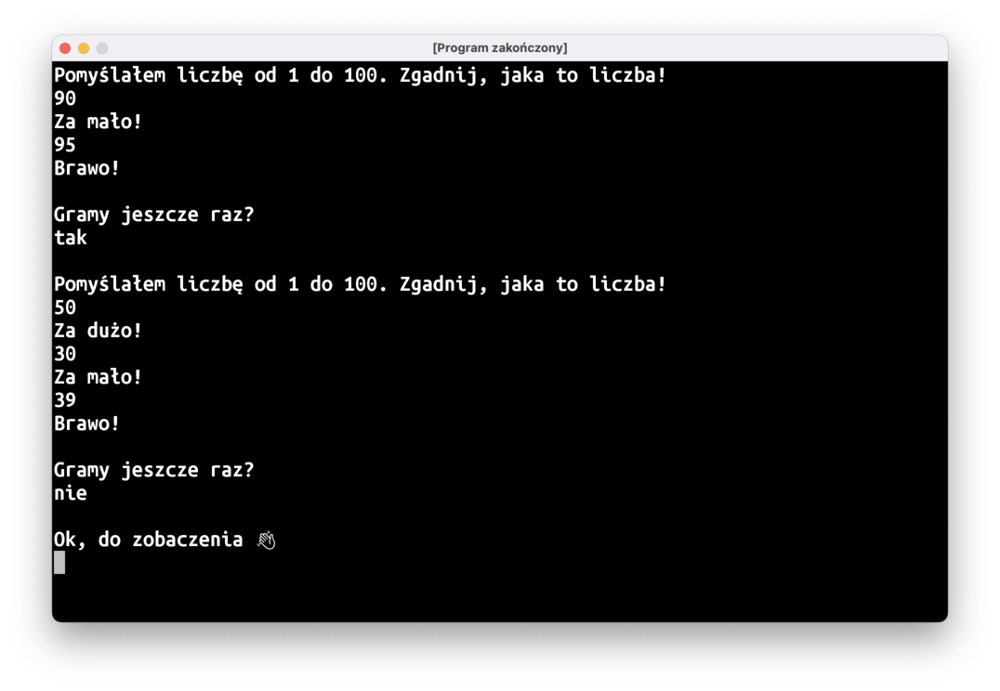
6. Frustrat
Jeśli gracz wpisze bezsensowny tekst zamiast liczby, komputer powinien wypisać ostrzeżenie. Przy czwartym ostrzeżeniu program powinien się zakończyć.
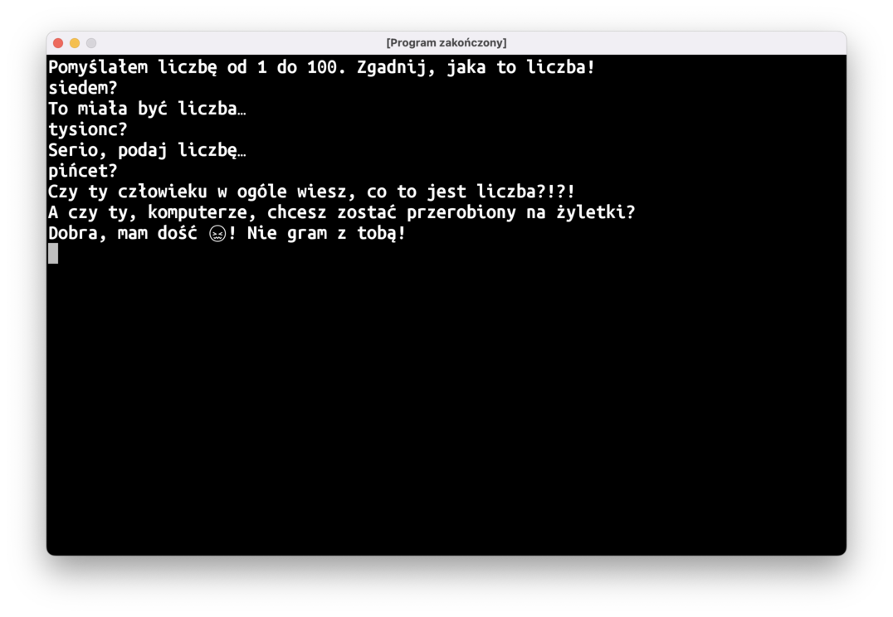
7. Blisko/Daleko ⭐️
Jeśli gracz trafi w liczbę o 5 mniejszą lub większą, komputer powinien wypisać troszkę inny komunikat (np. coś w stylu: “Prawie! Jeszcze troszkę więcej!”). Jeśli liczba różni się od wyniku o ponad 50, komunikat też powinien być inny (np.: “Oj, całkiem nie tak. Moja liczba jest dużo większa!”).
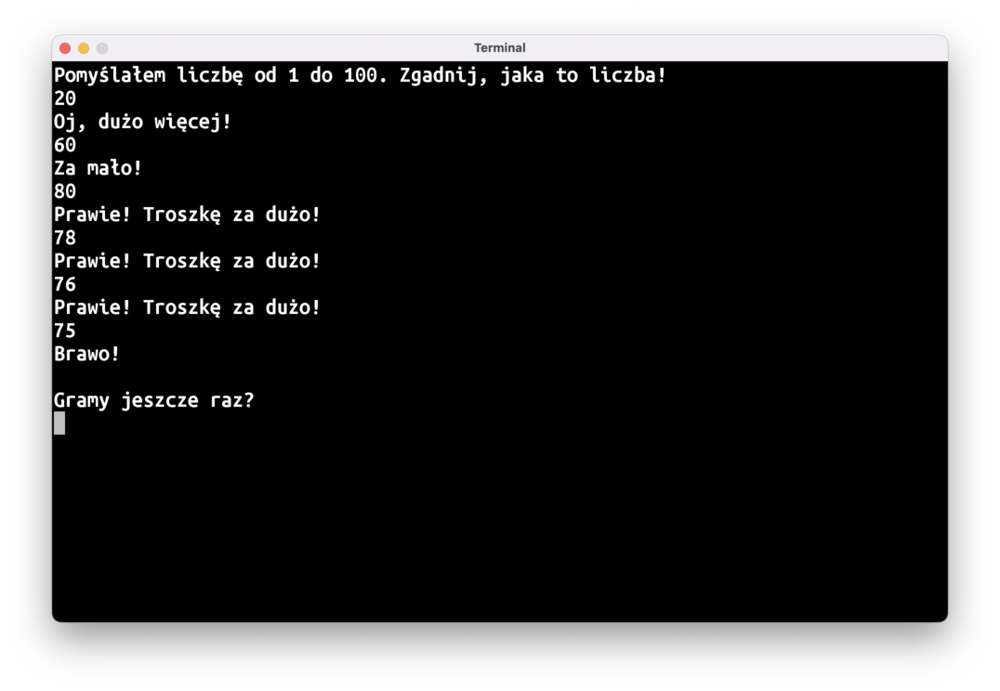
8. Pilnowanie sensownego przedziału ⭐
Niech komputer wypisze nieco inny komunikat, jeśli liczba jest spoza możliwego przedziału, tj. jeśli gracz wpisał liczbę 80 i dowiedział się, że jest to za dużo, a potem wpisze 90, komputer może napisać "To nie może być poprawna odpowiedź...".
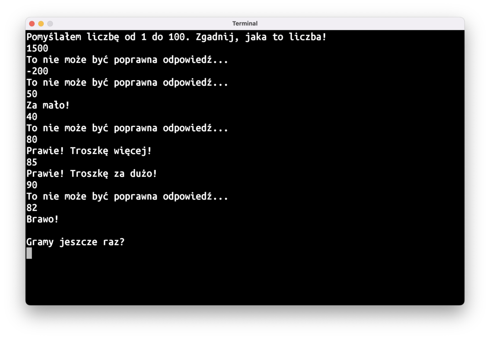